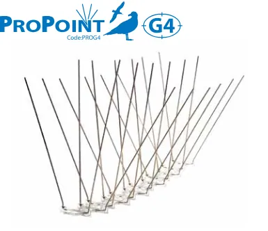
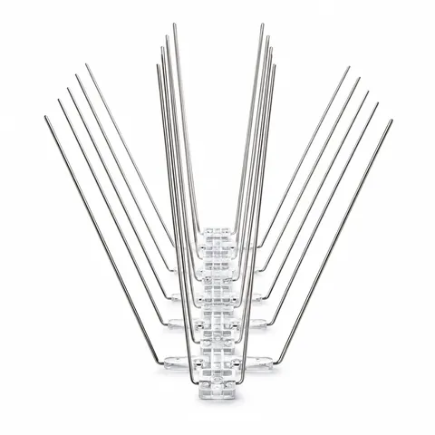
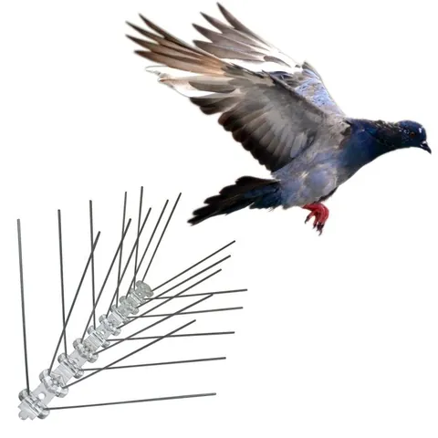
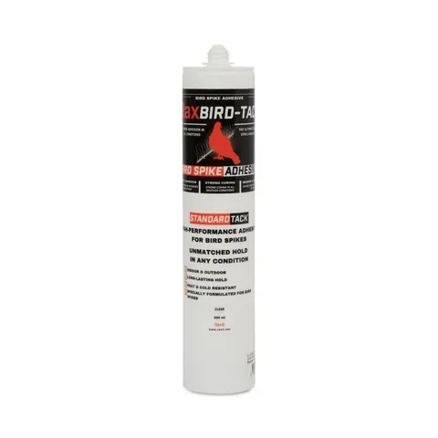
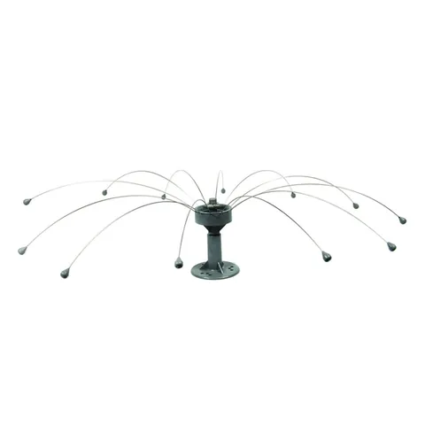

Måkeskrik klokka fire om morgenen, grising på bil og terrasse, og fugler som stuper mot deg når du går ut døra. Det er hekkesesongen. Det er lite å gjøre når den først er i gang – men mye å gjøre i god tid før. Nøkkelen er å hindre at måkene etablerer seg på taket ditt.
Hvilke måker er det?
Sju måkearter hekker på fastlandet i Norge, og mange har tilpasset seg godt til byer og tettsteder. Det er gråmåke og svartbak som lager mest problemer, men sildemåke, fiskemåke, hettemåke og krykkje kan også gjøre det. Fiskemåke, gråmåke, hettemåke og krykkje står på Norsk rødliste.
Hekkesesongen
- Midten av april til juni: egglegging, vanligvis tre egg.
- Rundt fire uker: ruging. Begge foreldrene ruger og mater.
- 4–6 uker etter klekking: ungene kan fly.
Reirene ligger på tak, på bakken eller i berg. Fiskemåke kan hekke i trær, og krykkje på hyller på husvegger. Flate tak er et yndet hekkested. Måkene forsvarer reir og unger ved å stupe mot inntrengere – det er derfor de kan virke aggressive i juni og juli.
Det du kan gjøre i god tid
- Finn ut hvor måkene hekket i fjor. Det er ofte bare noen få steder på taket der det er mulig å lage reir.
- Gjør disse stedene utilgjengelige før sesongen. Nett og vaier er effektive. På flate tak anbefaler FHI tynne stålvaiere med høyst 50 centimeter mellom hver og rundt 50 centimeter over taket. Maskestørrelsen på nett må være riktig, så fuglene ikke setter seg fast eller kommer seg inn bak nettet.
- Fjern gamle reir om vinteren, når fuglene ikke hekker. Da risikerer du heller ikke fuglelopper, som er i dvale.
- Fjern reirmateriale med en gang du ser at reirbyggingen starter om våren. Det er viktig å være tidlig ute.
- Sjekk utstyret jevnlig. Selv små skader kan gjøre at måkene begynner å hekke igjen.
Pigger og strips på kanter og pipehatter kan hindre at fuglene setter seg. Ventiler og vinduer bør også sikres.
Ikke mat måkene
Måker lærer raskt å stjele mat fra bord, terrasser og søppelkasser, og noen tar mat rett fra hånden. Ikke mat dem, og vær nøye med søppel og matavfall. Varige endringer krever at måkene ikke finner mat, vann og hvileplasser i nærheten.
Hva virker ikke?
- Lydapparater har ingen dokumentert langtidseffekt.
- Visuelle skremsler som ballonger, rovfuglfigurer og lys kan virke kort tid, men fuglene venner seg til dem. Det hjelper å bytte metode, og det er lettere å skremme fuglene før de har etablert revir.
- Klebrige produkter er ikke giftige, men mister effekten, kan misfarge bygningen og er et dyrevelferdsproblem.
- Skyting alene har ingen varig effekt – nye fugler kommer raskt til.
Hva gjelder hvis måkene allerede hekker?
Naturmangfoldloven sier at unødig skade på vilt og reir skal unngås. Kommunen kan gi tillatelse til å felle gråmåke og svartbak etter viltforskriften, men bare når skaden er av vesentlig økonomisk betydning, forebyggende tiltak er prøvd, uttaket rettes mot fuglene som gjør skade og vil stanse skaden, og bestanden ikke trues. Støy, grising eller at måkene stuper mot folk gir som regel ikke grunnlag. Fangst og gift er forbudt.
Hold avstand til reiret, så går hekkeperioden over. Forstyrrer du måkene, varer bråket ofte lenger.
Helse
Måkeavføring kan inneholde salmonella og campylobacter, og syren kan skade biler, båter og fasader. Fugleinfluensa drepte mange måker i Nord-Norge sommeren 2023. Finner du syke eller døde måker og mistenker smittsom sykdom, skal du varsle Mattilsynet, og døde fugler skal håndteres med hansker. Mattilsynet fraråder å spise måkeegg på grunn av høye nivåer av dioksiner og PCB.
Riktig utstyr
Valgt for denne siden · kjøp hos Skadedyrbutikken




Vanlige spørsmål
Kan jeg fjerne et måkereir?
Bare før det er ferdig bygget. Et reir regnes som beskyttet når det er ferdig bygget, og å fjerne et reir etter at det er lagt egg krever tillatelse. I en koloni regnes alle reir som beskyttet så snart én fugl har lagt egg.
Når hekker måkene?
Eggleggingen skjer vanligvis fra midten av april og utover i juni. Rugingen tar rundt fire uker, og ungene kan fly etter 4–6 uker. Måkene er mest aggressive mens de forsvarer reir og unger.
Hva virker mot måker på taket?
Nett og vaier som hindrer måkene i å lande og bygge reir. På flate tak anbefaler FHI tynne stålvaiere med høyst 50 centimeter mellom hver vaier og rundt 50 centimeter over taket. Tiltakene må være på plass før hekkingen starter.
Virker plastugler og lydapparater mot måker?
Bare kort tid. Lydapparater har ingen dokumentert langtidseffekt, og fugler venner seg raskt til visuelle skremsler som ballonger og rovfuglfigurer. Det hjelper å bytte metode.
Kan jeg få skyte måker som plager meg?
Kommunen kan gi tillatelse til å felle gråmåke og svartbak når skaden er av vesentlig økonomisk betydning og forebyggende tiltak er prøvd. Støy og grising er normalt ikke nok. Skyting gir heller ingen varig effekt alene, og i tettbygd strøk krever det tillatelse fra politiet.
Kilder
- FHI Skadedyrhåndboka: Måker
- Miljødirektoratet: Forebyggende måketiltak må gjøres før hekkingen starter
- Mattilsynet: Spørsmål og svar om måker
- BirdLife Norge: Hekketid og måker
Artikkelen er skrevet av redaksjonen i Kryp.as og bygger på kildene over. Den erstatter ikke råd fra lege, veterinær eller fagperson.